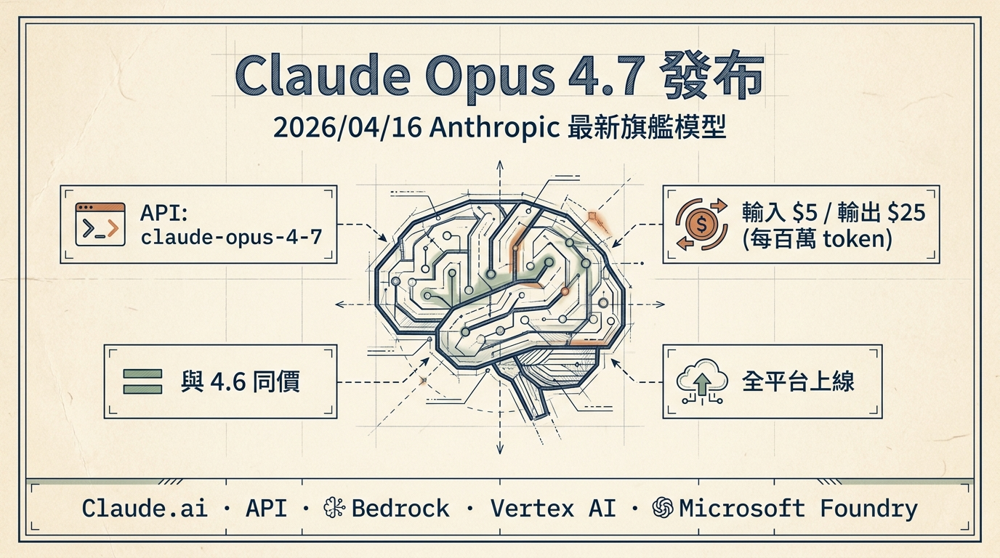
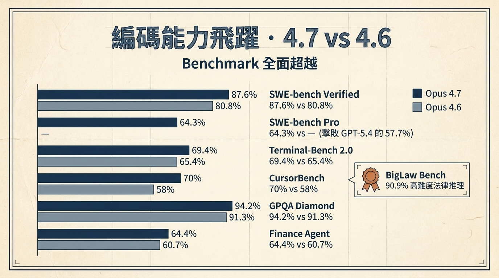
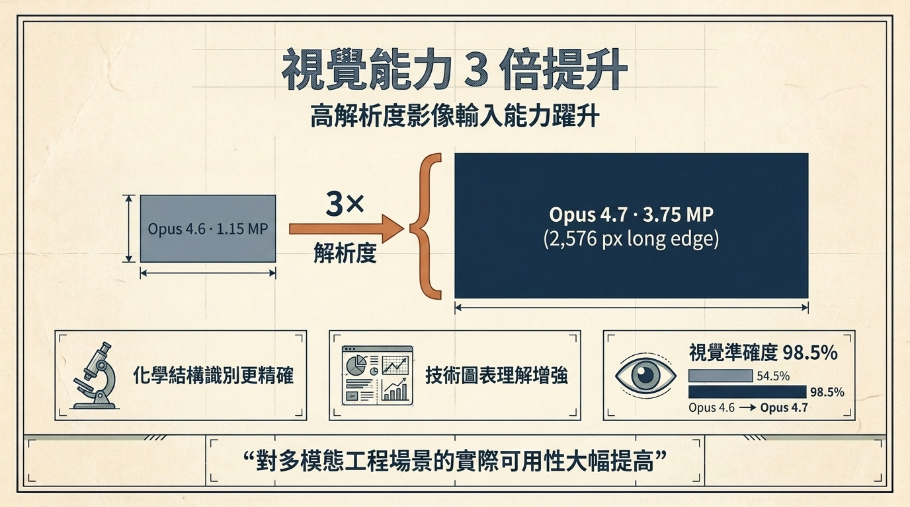
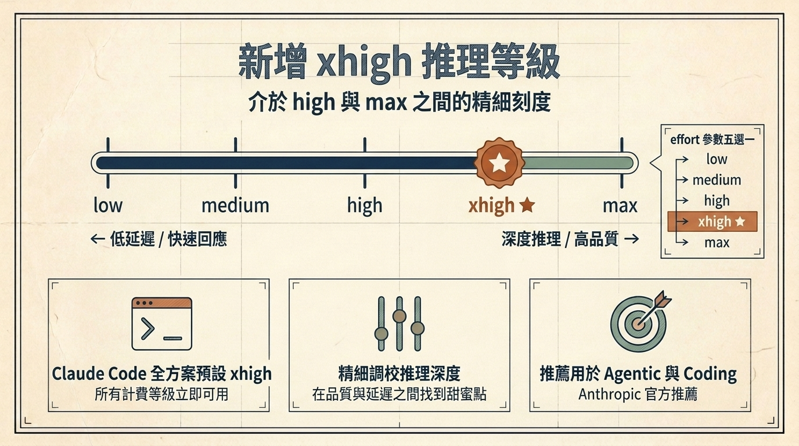
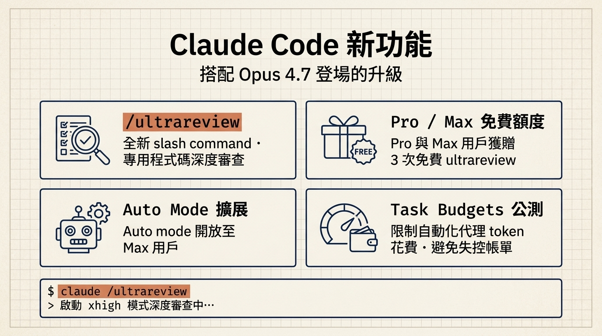
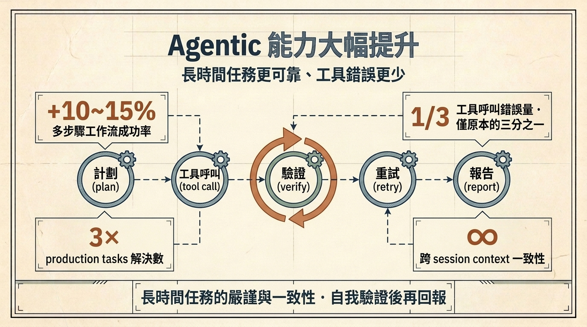
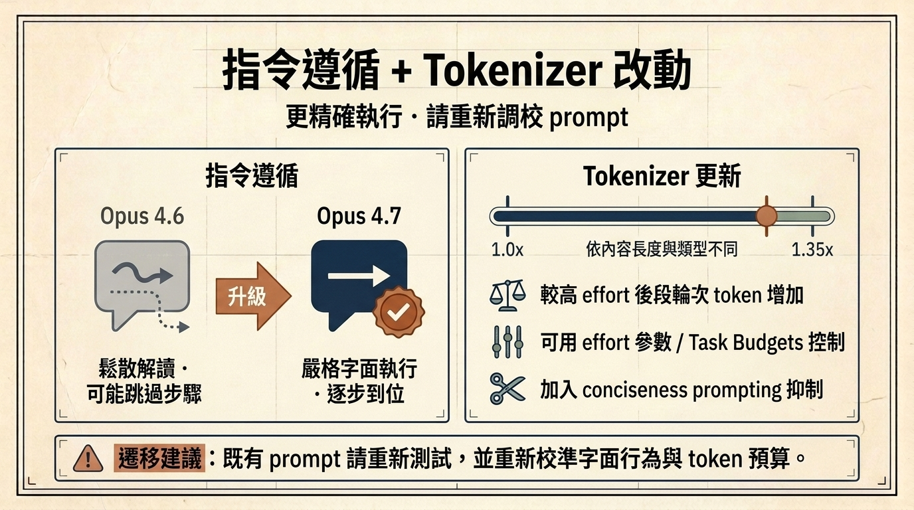
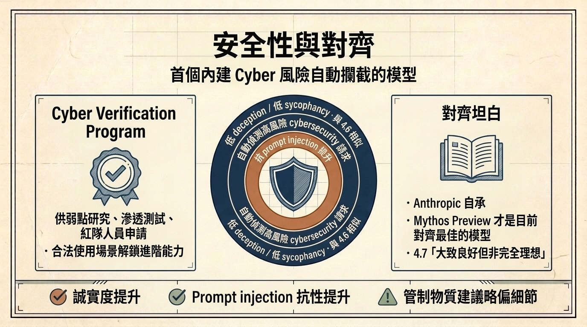
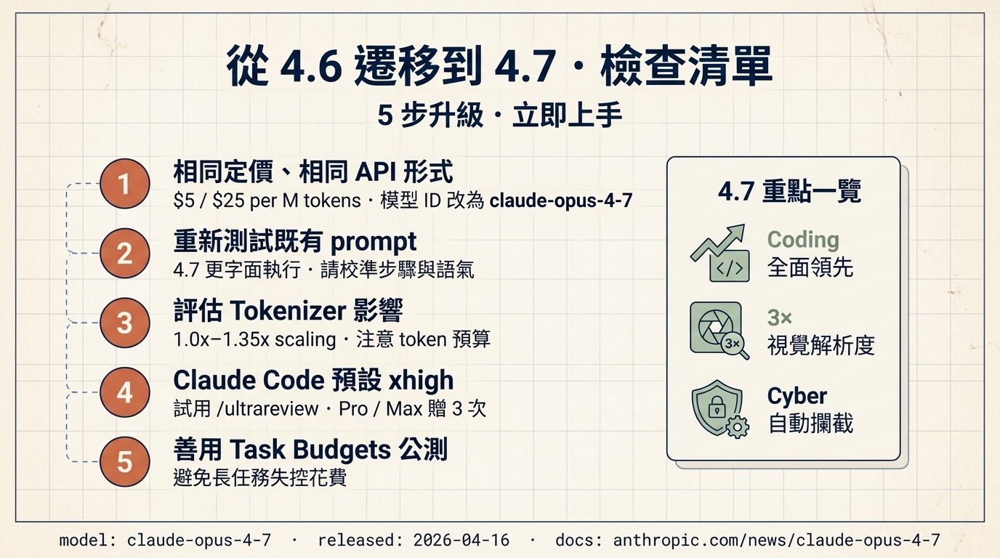

Anthropic 最新旗艦模型上線，編碼、視覺、Agentic 全面升級，定價不變。本報告整理所有重點、Benchmark 與從 4.6 遷移的注意事項。

Opus 4.7 在所有官方 Benchmark 上超越 4.6，且保留相同的 API 介面與 token 計費，僅更新模型 ID 即可直接替換。
模型 ID 改為 claude-opus-4-7，原有程式碼無需大改。
輸入 $5、輸出 $25（每百萬 token），與 Opus 4.6 完全相同，預算不變。
Claude.ai、API、Amazon Bedrock、Google Vertex AI、Microsoft Foundry 同步開放。
SWE-bench、Terminal-Bench、CursorBench 等主流評測全面提升，SWE-bench Pro 更擊敗 GPT-5.4。
| Benchmark | 分數對比 | 變化 |
|---|---|---|
| SWE-bench Verified | +6.8 pp | |
| SWE-bench Pro | ※ 擊敗 GPT-5.4 | Lead |
| Terminal-Bench 2.0 | +4.0 pp | |
| CursorBench | +12 pp | |
| GPQA Diamond | +2.9 pp | |
| Finance Agent | +3.7 pp | |
| BigLaw Bench | ※ 高難度法律推理 | SOTA |

輸入圖像解析度大幅躍升到 2,576 px 長邊、約 3.75 MP，相較 Opus 4.6 的 1.15 MP 擴增三倍多。

介於 high 與 max 之間的精細刻度，讓你在品質與延遲間找到最佳平衡。
所有計費等級立即享用深度推理，不需手動調整 effort 參數。
在品質、速度、成本之間找到甜蜜點；適合長任務或需要穩定輸出的場景。
Coding、Agentic、長時間工作流 — 官方指定 xhigh 為最佳效益等級。

/ultrareview專用程式碼審查、Auto Mode 擴展、Task Budgets 公測，開發流程又快又省。

$ claude /ultrareview # 啟動 xhigh 模式深度審查中… → 掃描 18 檔案 · 發現 3 個潛在 bug · 2 個效能警告 → 建議 Patch 已附在 PR 留言中
多步驟工作流成功率提升 10–15%，工具呼叫錯誤只剩原本的三分之一，並具備自我驗證能力。
Opus 4.7 在報告結果前，會先執行 plan → tool call → verify → retry 的內部驗證流程，確保輸出符合預期。這也是為什麼長時間任務的嚴謹度與一致性顯著提升。

4.7 會更字面地解讀指令、逐步執行；同時 tokenizer 有 1.0–1.35× 的變動，遷移時請同步評估。

4.7 不再自動跳過步驟或自行「合理化」需求，請把 prompt 寫得更明確。
不同內容 token 數會變動，請評估既有用量與預算，必要時搭配 Task Budgets。
舊 prompts 可能因更嚴格的字面執行而輸出差異，上線前請做 regression 測試。
conciseness prompting 或用 effort 參數抑制輸出。
4.7 首次內建自動偵測並阻擋高風險 cybersecurity 請求，正當用途可申請 Cyber Verification Program 解鎖。
首個內建安全層、可自動拒絕濫用攻擊指令的 Claude 模型。
供弱點研究、滲透測試、紅隊人員申請 — 合法用途解鎖進階 Cyber 能力。
兩項指標皆優於 4.6，deception / sycophancy 保持低水準。

照著這份清單走，今天就能把專案從 4.6 安全升級到 4.7。
claude-opus-4-7。
/ultrareview · Pro / Max 用戶贈 3 次免費。
